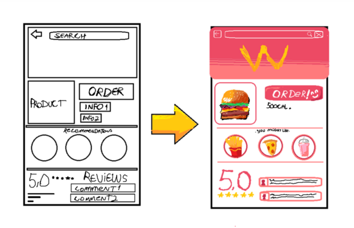

üìú S√©culo XV ‚Äì Prensa de Gutenberg
Início da comunicação impressa em massa. Tipografia manual e padronização do layout marcaram o início do design gráfico.

A invenção da prensa de Gutenberg no século XV foi fundamental para a disseminação em massa de informações, especialmente livros, o que possibilitou uma verdadeira revolução na comunicação.
Para mais informações, acesse Imprensa de Gutenberg - Wikipédia.
üì∞ S√©culo XIX ‚Äì Design Editorial
Cartazes e publicidade ganham força. O movimento Arts & Crafts valoriza o design impresso artesanal e estético.

O movimento Arts & Crafts influenciou muito o design editorial do século XIX, promovendo um estilo artístico que respeitava os detalhes e a qualidade do design artesanal.
Saiba mais sobre este movimento em Arts and Crafts - Wikipédia.
üé® Anos 1920‚Äì1930 ‚Äì Bauhaus e Modernismo
Conceitos de grid, hierarquia visual e funcionalismo moldam a base do design gráfico moderno.

A Bauhaus foi uma das escolas de design mais influentes do século XX, promovendo a integração entre arte e design, com foco na funcionalidade e estética minimalista.
Para mais informações, acesse Bauhaus - Wikipédia.
üñ®Ô∏è Anos 1950‚Äì1970 ‚Äì Identidade Visual e Publicidade
O design gráfico se torna fundamental na construção de marcas. Avanços na impressão impulsionam o mercado.
A criação de identidades visuais e logotipos tornou-se uma prática importante durante esse período, com destaque para marcas como IBM, que marcaram o design gráfico corporativo.
Saiba mais sobre identidade visual em Identidade Visual
üíª Anos 1980‚Äì1990 ‚Äì Era Digital e Softwares
Com o surgimento dos computadores pessoais e softwares como Adobe, o design passa a ser feito digitalmente.

Nos anos 1980 e 1990, a popularização dos computadores pessoais e o lançamento de softwares como o Adobe Illustrator e Photoshop transformaram o design, permitindo a criação digital de layouts e gráficos.
Saiba mais sobre design digital em Transformações Tecnológicas
üåê Anos 2000 ‚Äì Web Design e Usabilidade
O design se adapta à internet. Surgem novos desafios como interatividade, acessibilidade e experiência do usuário.

Nos anos 2000, o design gráfico se adapta à web, com o foco crescente em usabilidade e interatividade. Surgem novos desafios como a criação de interfaces acessíveis e a melhoria da experiência do usuário, impulsionando o desenvolvimento de sites mais funcionais e intuitivos.
Saiba mais sobre web design em História e Evolução do Web Design
üì± Anos 2010‚ÄìHoje ‚Äì Mobile First e UX/UI
Design centrado no usuário, interfaces responsivas e foco em experiência dominaram o cenário do design gráfico atual.
Nos anos 2010 até hoje, o design gráfico passou a ser centrado no usuário, com a implementação do conceito "Mobile First", priorizando a experiência em dispositivos móveis. Interfaces responsivas e a melhoria contínua da experiência do usuário (UX) e da interface do usuário (UI) se tornaram fundamentais para o desenvolvimento de aplicativos e sites.
Saiba mais sobre UX/UI em Design de interface